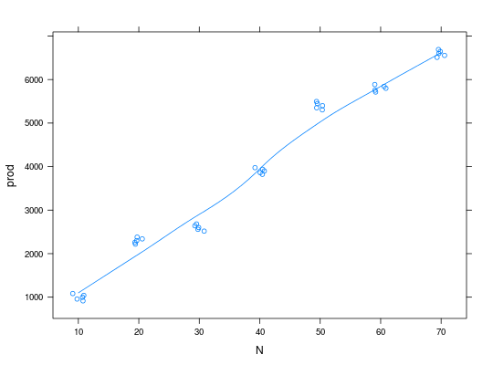

Os dados abaixo são provenientes de um ensaio em que foram utilizadas 7 doses de nitrogênio aplicado em cobertura para avaliar a produtividade de milho. O experimento foi montado em delineamento inteiramente casualizado, com 5 repetições.
Um data.frame com 35 observações e 3 variáveis, em que
NreptresultFARIA (2009), Quadro 14.2 pág. 198.
library(lattice) data(FariaQd14.2)#> Warning: data set ‘FariaQd14.2’ not foundstr(FariaQd14.2)#> 'data.frame': 35 obs. of 3 variables: #> $ N : int 10 10 10 10 10 20 20 20 20 20 ... #> $ rept: int 1 2 3 4 5 1 2 3 4 5 ... #> $ prod: num 1000 916 958 1084 1042 ...aggregate(prod ~ N, data = FariaQd14.2, FUN = mean)#> N prod #> 1 10 1000 #> 2 20 2300 #> 3 30 2600 #> 4 40 3900 #> 5 50 5400 #> 6 60 5800 #> 7 70 6600xyplot(prod ~ N, data = FariaQd14.2, jitter.x = TRUE, type = c("p", "smooth"))